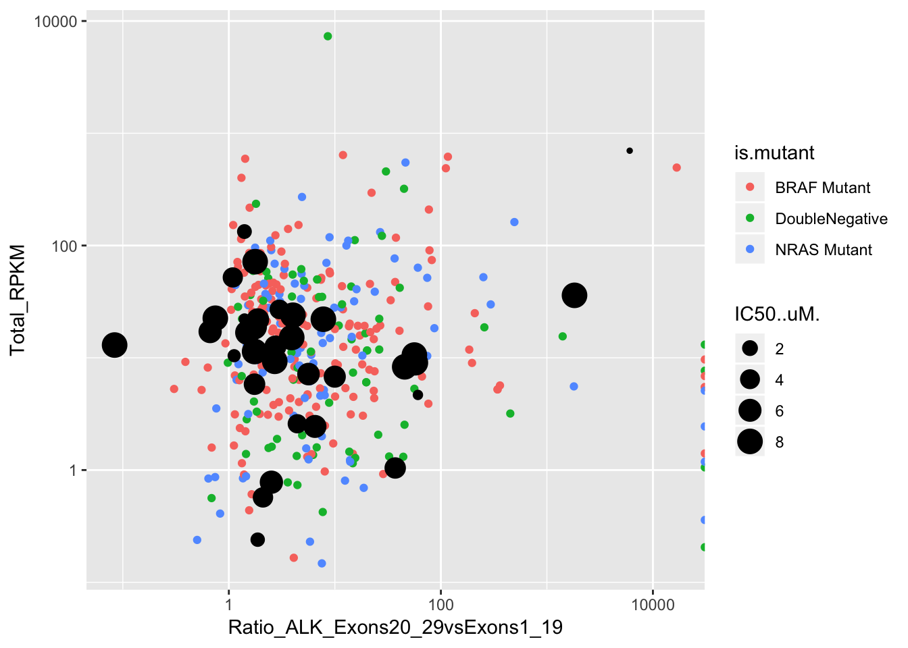
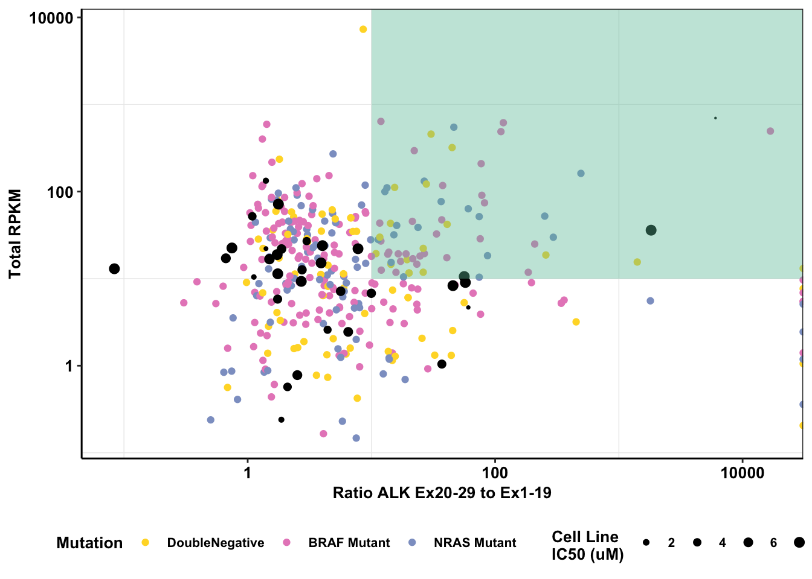

Last updated: 2019-03-06
workflowr checks: (Click a bullet for more information) ✔ R Markdown file: up-to-date
Great! Since the R Markdown file has been committed to the Git repository, you know the exact version of the code that produced these results.
✔ Environment: empty
Great job! The global environment was empty. Objects defined in the global environment can affect the analysis in your R Markdown file in unknown ways. For reproduciblity it’s best to always run the code in an empty environment.
✔ Seed:
set.seed(20190211)
The command set.seed(20190211) was run prior to running the code in the R Markdown file. Setting a seed ensures that any results that rely on randomness, e.g. subsampling or permutations, are reproducible.
✔ Session information: recorded
Great job! Recording the operating system, R version, and package versions is critical for reproducibility.
✔ Repository version: 6f57396
wflow_publish or wflow_git_commit). workflowr only checks the R Markdown file, but you know if there are other scripts or data files that it depends on. Below is the status of the Git repository when the results were generated:
Ignored files:
Ignored: .Rhistory
Ignored: .Rproj.user/
Untracked files:
Untracked: code/alldata_compiler.R
Untracked: code/contab_maker.R
Untracked: code/mut_excl_genes_datapoints.R
Untracked: code/mut_excl_genes_generator.R
Untracked: code/quadratic_solver.R
Untracked: code/simresults_generator.R
Untracked: data/ALKATI_ccle.csv
Untracked: data/All_Data_V2.csv
Untracked: data/CCLE_NP24.2009_Drug_data_2015.02.24.csv
Untracked: data/alkati_growthcurvedata.csv
Untracked: data/alkati_growthcurvedata_popdoublings.csv
Untracked: data/alkati_melanoma_vemurafenib_figure_data.csv
Untracked: data/all_data.csv
Untracked: data/tcga_luad_expression/
Untracked: data/tcga_skcm_expression/
Untracked: docs/figure/Filteranalysis.Rmd/
Untracked: output/alkati_ccle_tae684_plot.pdf
Untracked: output/alkati_filtercutoff_allfilters.csv
Untracked: output/alkati_luad_exonimbalance.pdf
Untracked: output/alkati_mtn_pval_fig2B.pdf
Untracked: output/alkati_skcm_exonimbalance.pdf
Untracked: output/all_data_luad.csv
Untracked: output/all_data_luad_egfr.csv
Untracked: output/all_data_skcm.csv
Untracked: output/baf3_alkati_figure_deltaadjusted_doublings.pdf
Untracked: output/baf3_barplot.pdf
Untracked: output/baf3_elisa_barplot.pdf
Untracked: output/egfr_luad_exonimbalance.pdf
Untracked: output/fig2b2_filtercutoff_atinras_totalalk.pdf
Untracked: output/fig2b_filtercutoff_atibraf.pdf
Untracked: output/fig2b_filtercutoff_atinras.pdf
Untracked: output/luad_alk_exon_expression.csv
Untracked: output/luad_egfr_exon_expression.csv
Untracked: output/melanoma_vemurafenib_fig.pdf
Untracked: output/skcm_alk_exon_expression.csv
Unstaged changes:
Modified: analysis/ALKATI_Filter_Cutoff_Analysis.Rmd
Modified: analysis/baf3_alkati_transformations.Rmd
| File | Version | Author | Date | Message |
|---|---|---|---|---|
| Rmd | 6f57396 | haiderinam | 2019-03-06 | Added CCLE analyses on cancer cell line TAE684 response. This includes a logistic |
The inputs here are 3 .csv files.
ccle_drug=read.csv("data/CCLE_NP24.2009_Drug_data_2015.02.24.csv",sep=",",header=T,stringsAsFactors=F)
ccle_alk=ccle_drug[ccle_drug$Target=="ALK",]
rm(ccle_drug)
ccle_rpkm=read.csv("data/ALKATI_ccle.csv", sep=",",header=T, stringsAsFactors=F)
ccleRpkmT=t(ccle_rpkm)
#Extracting our desired cell lines
data_mat=data.frame(ccleRpkmT[5:57,])
colnames(data_mat)[1:28]=ccleRpkmT[4,2:29]
data_mat_rpkm=data.frame(cbind(rownames(data_mat),data_mat))
rownames(data_mat_rpkm)=NULL
data_mat_rpkm$rownames.data_mat.=sub("^G[0-9]{5}.([A-Za-z0-9._]*).[0-9].bam","\\1",data_mat_rpkm$rownames.data_mat.)
############################################################################################################
ccle_alk$CCLE.Cell.Line.Name=sub("^([0-9A-Z]*)_[A-Za-z0-9_]*","\\1",ccle_alk$CCLE.Cell.Line.Name)
data_mat_rpkm$rownames.data_mat.=gsub("[_]","",data_mat_rpkm$rownames.data_mat.)
data_mat_rpkm$rownames.data_mat.=gsub("[.]","",data_mat_rpkm$rownames.data_mat.)
data_mat_rpkm$rownames.data_mat.=toupper(data_mat_rpkm$rownames.data_mat.)
#they were character because of auto import
for (i in 2:ncol(data_mat_rpkm)){
data_mat_rpkm[,i]=as.numeric(as.character(data_mat_rpkm[,i]))
}
for (i in 2:nrow(data_mat_rpkm)){
data_mat_rpkm[i,31]=sum(data_mat_rpkm[i,2:29])
data_mat_rpkm[i,32]=sum(data_mat_rpkm[i,2:19])/19
data_mat_rpkm[i,33]=sum(data_mat_rpkm[i,20:29])/10
}
colnames(data_mat_rpkm)[31]="SumRPKM"
colnames(data_mat_rpkm)[32]="Avg1_19RPKM"
colnames(data_mat_rpkm)[33]="Avg20_29RPKM"
alldata=merge(data_mat_rpkm,ccle_alk, by.x="rownames.data_mat.", by.y="CCLE.Cell.Line.Name")
alldata=data.frame(cbind(alldata,alldata$Avg20_29RPKM/alldata$Avg1_19RPKM))
data_mat_rpkm=data.frame(cbind(data_mat_rpkm,data_mat_rpkm$Avg20_29RPKM/data_mat_rpkm$Avg1_19RPKM))
#####Makingderivative columns for RPKM ratio and Sum RPKM#########
skcm=read.csv("data/all_data.csv",sep=",",header=T,stringsAsFactors=F)#Downloaded from firehose 02-xx-2016,compiled with mutation data, 340 patients with RNAseq and Muts
skcm_comp=data.frame(cbind(skcm,skcm$mean_RPKM_20.29/skcm$mean_RPKM_1.19))
dim(skcm_comp)[1] 351 11skcm_comp[12]=skcm_comp[5]
skcm_comp[13]=data.frame(20*(skcm_comp$mean_RPKM_1.19)+10*(skcm_comp$mean_RPKM_20.29))
colnames(skcm_comp)[13]="Total_RPKM"
colnames(skcm_comp)[12]="Ratio_ALK_Exons20_29vsExons1_19"
skcm_comp[14]=data.frame(skcm_comp$BRAF!=NaN)
colnames(skcm_comp)[14]="is.BRAF"
skcm_comp[15]=data.frame(grepl("V600",skcm_comp$BRAF),"BRAF")Warning in `[<-.data.frame`(`*tmp*`, 15, value =
structure(list(grepl..V600...skcm_comp.BRAF. = c(TRUE, : provided 2
variables to replace 1 variablescolnames(skcm_comp)[15]="is.V600"
skcm_comp[16]=data.frame(skcm_comp$NRAS!=NaN)
colnames(skcm_comp)[16]="is.NRAS"
skcm_comp[17]=data.frame(grepl("Q61",skcm_comp$NRAS),"NRAS")Warning in `[<-.data.frame`(`*tmp*`, 17, value =
structure(list(grepl..Q61...skcm_comp.NRAS. = c(FALSE, : provided 2
variables to replace 1 variablescolnames(skcm_comp)[17]="is.Q61"
skcm_comp[skcm_comp$BRAF==NaN & skcm_comp$NRAS==NaN, 18]= "DoubleNegative"
colnames(skcm_comp)[18]="is.neitherBRAForNRAS"
skcm_comp[skcm_comp$BRAF!=NaN, 19]= "BRAF Mutant"
skcm_comp[skcm_comp$NRAS!=NaN, 19]= "NRAS Mutant"
skcm_comp[skcm_comp$BRAF==NaN & skcm_comp$NRAS==NaN, 19]= "DoubleNegative"
colnames(skcm_comp)[19]="is.mutant"
######Graphing########
ggplot()+geom_point(data=skcm_comp,aes(x=Ratio_ALK_Exons20_29vsExons1_19, y=Total_RPKM,color=is.mutant))+geom_point(data=alldata,aes(x=alldata.Avg20_29RPKM.alldata.Avg1_19RPKM,y=SumRPKM,size=IC50..uM.))+scale_x_log10()+scale_y_log10()Warning: Transformation introduced infinite values in continuous y-axisWarning: Removed 2 rows containing missing values (geom_point).
# ggsave("cellline,IC50.png",width=10,length=10)
# ggplot()+geom_point(data=skcm_comp,aes(x=Ratio_ALK_Exons20_29vsExons1_19, y=Total_RPKM,color=is.mutant))+geom_point(data=data_mat_rpkm,aes(x=alldata.Avg20_29RPKM.alldata.Avg1_19RPKM,y=SumRPKM,size=IC50..uM.))+scale_x_log10()+scale_y_log10()
# ggsave("cellline_clinical_all.png",width=10,length=10)
ggplot()+
geom_point(data=skcm_comp,aes(x=Ratio_ALK_Exons20_29vsExons1_19, y=Total_RPKM,color=factor(skcm_comp$is.mutant,levels = c("DoubleNegative","BRAF Mutant","NRAS Mutant")),size=2.5))+
geom_point(data=alldata,aes(x=alldata.Avg20_29RPKM.alldata.Avg1_19RPKM,y=SumRPKM,size=IC50..uM.))+
annotate("rect", xmin = 10, xmax = Inf, ymin = 10, ymax = Inf,fill="#66C2A5",alpha = .4)+
scale_x_log10()+
scale_y_log10()+
cleanup+
# scale_color_brewer(palette="Set2",name="Mutation")+
scale_color_manual(values =c("#FFD92F","#E78AC3","#8DA0CB"),name="Mutation")+
scale_size_continuous("Cell Line IC50[uM]")+
xlab("Ratio ALK Ex20-29 to Ex1-19")+
ylab("Total RPKM")+
theme(plot.title = element_text(hjust=.5),
text = element_text(size=26,face="bold"),
axis.title = element_text(face="bold",size="26",color="black"),
axis.text=element_text(face="bold",size="24",color="black"))Warning: Transformation introduced infinite values in continuous y-axis
Warning: Removed 2 rows containing missing values (geom_point).
ggsave("output/alkati_ccle_tae684_plot.pdf",height=8,width=12, useDingbats=FALSE)Warning: Transformation introduced infinite values in continuous y-axis
Warning: Removed 2 rows containing missing values (geom_point).#Notice that we are keeping the EML4ALK translocation from the supm2 lung cancer cell line. These improving IC50's predictive power, if anything.
#Since we only have two ALK
#We are going to look at how well IC50 predicts whether a hit is ALKATI.
#Checking for overexpression. overexpression taken as 1.5x expression in kinase & RPKM of at least 50
#Detecting ALKATI
alldata$alkati=0
alldata$alkati[alldata$alldata.Avg20_29RPKM.alldata.Avg1_19RPKM>5&alldata$SumRPKM>50]=1
#Predictive power of IC50 in a logistic regression model
logistic=glm(alkati~IC50..uM.,data = alldata,family = "binomial")Warning: glm.fit: algorithm did not convergeWarning: glm.fit: fitted probabilities numerically 0 or 1 occurredsummary(logistic)
Call:
glm(formula = alkati ~ IC50..uM., family = "binomial", data = alldata)
Deviance Residuals:
Min 1Q Median 3Q Max
-1.548e-04 -2.100e-08 -2.100e-08 -2.100e-08 1.237e-04
Coefficients:
Estimate Std. Error z value Pr(>|z|)
(Intercept) 28.6 8921.1 0.003 0.997
IC50..uM. -106.0 25472.7 -0.004 0.997
(Dispersion parameter for binomial family taken to be 1)
Null deviance: 9.0818e+00 on 34 degrees of freedom
Residual deviance: 3.9275e-08 on 33 degrees of freedom
AIC: 4
Number of Fisher Scoring iterations: 25#Checking for overexpression. overexpression taken as twice the expression in the kinase
#Detecting ALKATI
alldata$alkati=as.numeric(alldata$alldata.Avg20_29RPKM.alldata.Avg1_19RPKM>2,na.rm=T)
alldata$alkati[is.na(alldata$alkati)]=0
alldata$alkati=as.factor(alldata$alkati)
#Predictive power of IC50 in a logistic regression model
logistic=glm(alkati~IC50..uM.,data = alldata,family = "binomial")
summary(logistic)
Call:
glm(formula = alkati ~ IC50..uM., family = "binomial", data = alldata)
Deviance Residuals:
Min 1Q Median 3Q Max
-1.315 -1.245 1.045 1.098 1.247
Coefficients:
Estimate Std. Error z value Pr(>|z|)
(Intercept) -0.16801 0.81338 -0.207 0.836
IC50..uM. 0.06082 0.13242 0.459 0.646
(Dispersion parameter for binomial family taken to be 1)
Null deviance: 48.263 on 34 degrees of freedom
Residual deviance: 48.051 on 33 degrees of freedom
AIC: 52.051
Number of Fisher Scoring iterations: 4sessionInfo()R version 3.5.2 (2018-12-20)
Platform: x86_64-apple-darwin15.6.0 (64-bit)
Running under: macOS Mojave 10.14.3
Matrix products: default
BLAS: /Library/Frameworks/R.framework/Versions/3.5/Resources/lib/libRblas.0.dylib
LAPACK: /Library/Frameworks/R.framework/Versions/3.5/Resources/lib/libRlapack.dylib
locale:
[1] en_US.UTF-8/en_US.UTF-8/en_US.UTF-8/C/en_US.UTF-8/en_US.UTF-8
attached base packages:
[1] parallel grid stats graphics grDevices utils datasets
[8] methods base
other attached packages:
[1] ggsignif_0.4.0 usethis_1.4.0 devtools_2.0.1
[4] RColorBrewer_1.1-2 reshape2_1.4.3 ggplot2_3.1.0
[7] doParallel_1.0.14 iterators_1.0.10 foreach_1.4.4
[10] dplyr_0.7.8 VennDiagram_1.6.20 futile.logger_1.4.3
[13] workflowr_1.1.1 tictoc_1.0 knitr_1.21
loaded via a namespace (and not attached):
[1] tidyselect_0.2.5 xfun_0.4 remotes_2.0.2
[4] purrr_0.3.0 colorspace_1.4-0 htmltools_0.3.6
[7] yaml_2.2.0 rlang_0.3.1 pkgbuild_1.0.2
[10] R.oo_1.22.0 pillar_1.3.1 glue_1.3.0
[13] withr_2.1.2 R.utils_2.7.0 sessioninfo_1.1.1
[16] lambda.r_1.2.3 bindrcpp_0.2.2 bindr_0.1.1
[19] plyr_1.8.4 stringr_1.3.1 munsell_0.5.0
[22] gtable_0.2.0 R.methodsS3_1.7.1 codetools_0.2-16
[25] evaluate_0.12 memoise_1.1.0 labeling_0.3
[28] callr_3.1.1 ps_1.3.0 Rcpp_1.0.0
[31] backports_1.1.3 scales_1.0.0 formatR_1.5
[34] desc_1.2.0 pkgload_1.0.2 fs_1.2.6
[37] digest_0.6.18 stringi_1.2.4 processx_3.2.1
[40] rprojroot_1.3-2 cli_1.0.1 tools_3.5.2
[43] magrittr_1.5 lazyeval_0.2.1 tibble_2.0.1
[46] futile.options_1.0.1 crayon_1.3.4 whisker_0.3-2
[49] pkgconfig_2.0.2 prettyunits_1.0.2 assertthat_0.2.0
[52] rmarkdown_1.11 R6_2.3.0 git2r_0.24.0
[55] compiler_3.5.2 This reproducible R Markdown analysis was created with workflowr 1.1.1